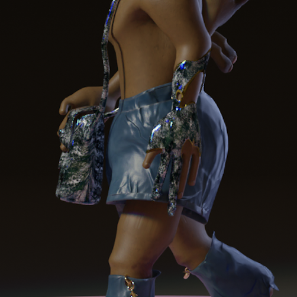
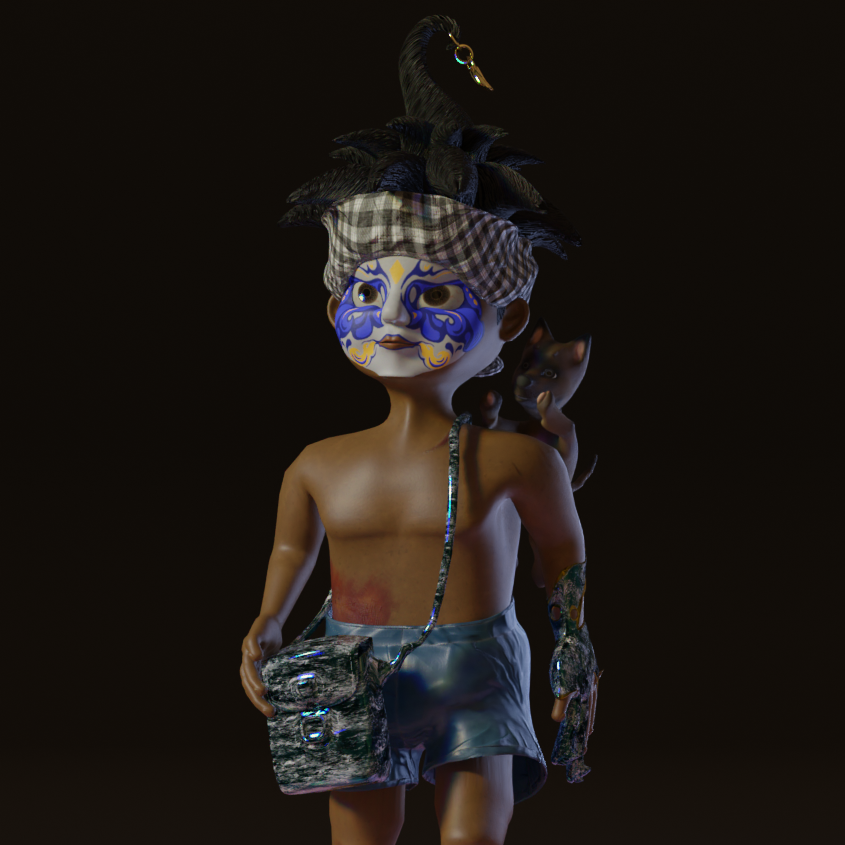
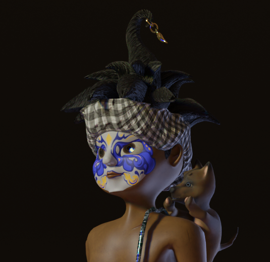

“Dứa Sẹo”, 16-year-old boy living in North Western of Vietnam, with witch blood running through his veins. He possesses a magical glove and ‘sacoche’ that allows him to control the movement of water, which he uses to save people from drowning and extinguish forest fires...